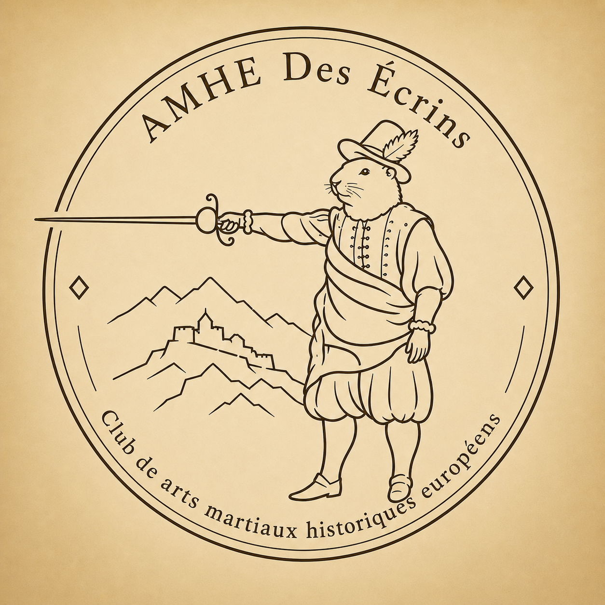
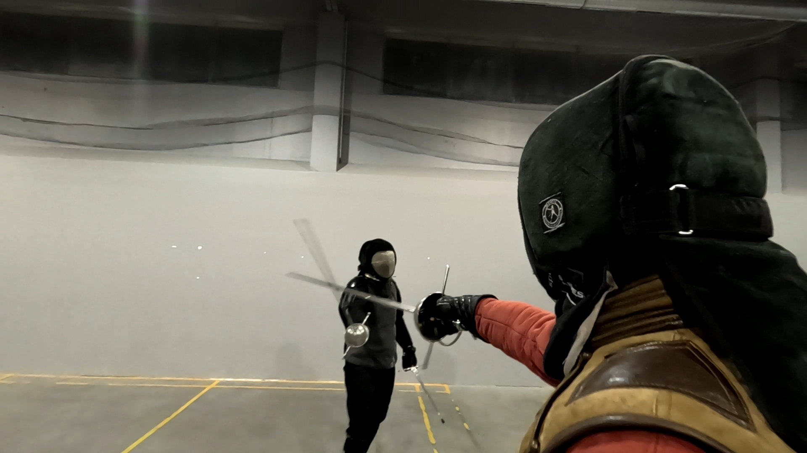
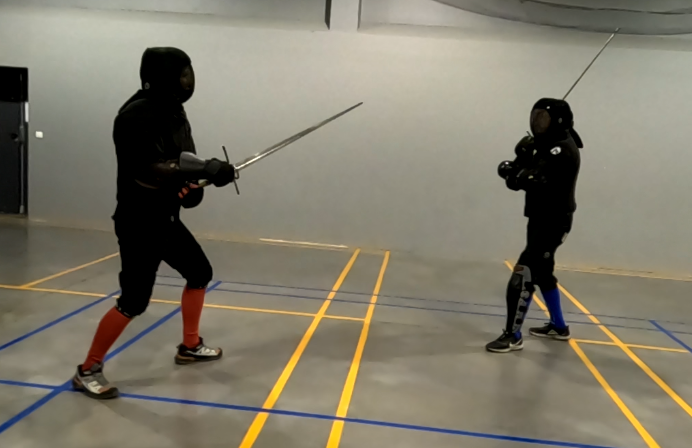

Pratiquez les Arts Martiaux Historiques Européens au cœur des Alpes.

AMHE des Écrins est une association sportive et culturelle basée à Saint-Chaffrey, près de Briançon.
Nous pratiquons les Arts Martiaux Historiques Européens à travers l'étude et la pratique des différentes écoles d'escrime européennes.
Notre objectif est de proposer une pratique sérieuse, accessible et conviviale dans un cadre exceptionnel au cœur des Alpes.


Découvrez plusieurs traditions martiales européennes à travers l'étude des sources historiques et la pratique moderne.
Les Arts Martiaux Historiques Européens (AMHE) sont une discipline qui vise à redécouvrir et pratiquer les traditions martiales européennes à partir des sources historiques.
À travers l'étude des traités anciens et la pratique moderne, les AMHE permettent d'explorer différentes armes et écoles d'escrime développées en Europe au fil des siècles.
Rapière, épée longue, sabre ou encore lutte historique : les AMHE constituent une activité à la fois sportive, culturelle et conviviale.
Aucune expérience préalable n'est nécessaire pour débuter.
La saison 2026-2027 débutera durant la deuxième semaine de septembre.
Les entraînements ont lieu chaque mercredi de 19h00 à 21h00.
Gymnase de l'école
319 route du Pont-Levis
05330 Saint-Chaffrey
Vous souhaitez découvrir les Arts Martiaux Historiques Européens ou participer à un entraînement ?
N'hésitez pas à nous contacter.